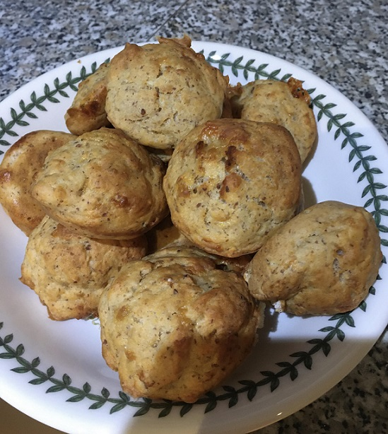

Mini Savoury Muffins
Ingredients:
-
10 tbsp of Self-Raising Flour (with a heap)
-
1/2 tsp of Salt
-
1 tsp of Sugar
-
1/5 tsp of Free and Easy egg Replacer
-
1/5 Cup of Kefir
-
1/5 Cup of Plant Milk
-
2 tsp Tomato Paste
-
1 Flax Egg mixed with 3 tbsp of Warm Water
-
100g of Grated Cheese
-
1 tbsp of Light Olive Oil

Method:
-
Mix the flax egg and leave it for 15 minutes.
-
Mix the kefir and plant milk together and leave it for 15 minutes.
-
Lightly grease the muffin tin.
-
Preheat the oven.
-
Mix all of the dry ingredients together in one bowl.
-
Mix all of the wet ingredients together in a second bowl.
-
Add the wet ingredient mixture into the dry ingredients, mix them together and leave the mixture for 15 minutes.
-
Spoon the mixture into the muffin tin.
-
Bake in the oven for 20 minutes.